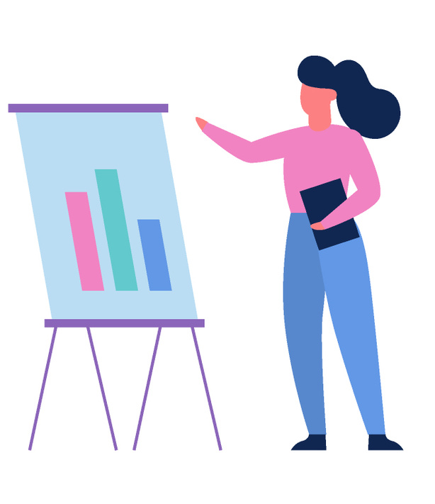

|
Mechanical Engineer
Verder Scientific
Tehran, Iran
Jan. 2019 - Aug. 2021
|
- Participated in training to become well-oriented with high standard materials equipment used in laboratory.
- Collaborated with product design, quality, and manufacturing engineers to ensure the final products meet the clients’ expectations.
- Performed daily sales presentations to the purchasing teams of the large manufacturers.
- Provided training to other members of the sales team.
- Conferred monthly with customers and engineers to assess equipment needs and provide post-sale services.
|
|  |
Material Engineer
Adonis Global Co.
Tehran, Iran
Feb. 2018 - Jan. 2019
|
- Received training in polymer and petrochemical manufacturing.
- Offered technical assistance to clients to facilitate seamless installations and updates.
- Communicated with internal and external stakeholders on a weekly basis.
- Advised clients about engineering concerns for in-development project on a monthly basis.
|
|
Design Mechanical Engineer
Fara Mechanic Co.
Tehran, Iran
Jan. 2016 - Jan. 2018
|
- Designed various products using CAD (e.g., bottle).
- Consulted with engineers and manufacturers to ensure the feasibility of the design.
- Produced the design documentations (including 3D CAD models and 2D drawing parts list).
- Consulted with fabricators during product manufacturing on design specifications and providing physical assistance when required.
- Selected, designed, and evaluated a variety of materials (e.g., thermoplastics, elastomers, composites, adhesives) to determine the best combination of materials for specific applications.
|
|
Research Engineer
West Alborz Steel Co.
Tehran, Iran
Jan. 2015 - Jan. 2016
|
- Modeled industrial parts using SOLIDWORKS and CATIA V5.
- Conducted research on metal properties to identify the best materials for manufacturing.
- Performed failure analysis using FE Model Industrial process using ABAQUS.
|